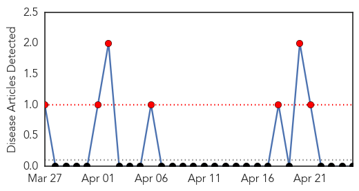
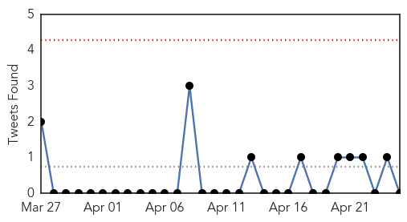
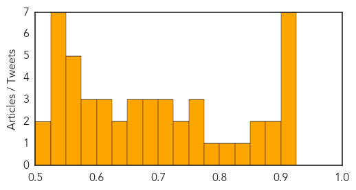

Yellow Fever
30-Day Web Trend
7 alerts, 0 warnings

30-Day Twitter Trend
0 alerts, 0 warnings

Article Locations


Article Confidences

Top Articles:
-
No articles found for Apr 25, 2015
Top Tweets:
-
No tweets found for Apr 25, 2015
Unknown
30-Day Web Trend
0 alerts, 0 warnings

30-Day Twitter Trend
0 alerts, 0 warnings

Article Locations

Article Confidences
Top Articles:
- 0.917
- Chicago Tribune
- 0.917
- Chicago Tribune
- 0.917
- Chicago Tribune
- 0.917
- Chicago Tribune
- 0.917
- Chicago Tribune
- 0.917
- Chicago Tribune
- 0.917
- Chicago Tribune
- 0.890
- World Malaria Day: Red Cross and partners continue the battle against the number one killer in the Central African Republic
- 0.886
- Experts: How To Avoid Backyard Chicken Bird Flu
- 0.873
- World Malaria Day 2015: Join the fight to defeat malaria
- 0.852
- Minnesota declares state of emergency over bird flu
- 0.832
- Tips to protect your dog from canine flu
- 0.812
- Botulism outbreak kills 1 is Ohio, injures 28 – Health officials blames canned food
- 0.780
- Indiana Studes Exposed To Tuberculosis, Health Officials Warn
- 0.773
- CDC sends national botulism antitoxin to Ohio in effort to combat outbreak
- 0.771
- HMC warns travellers to take precautions against malaria
- 0.767
- Malaria cases on the rise in Delhi as temperatures soar to 40 degrees
- 0.748
- 'When people come with severe malaria, it is like a race against time'
- 0.740
- How have hospitals in Suffolk and Essex tackled outbreaks of life-threatening ‘superbugs’?
- 0.723
- 1,200 Kids Die From Malaria A Day. Low-Cost Preventative Treatments Could Change That
- 0.707
- First Case in Over a Decade : News : Nature World News
- 0.706
- 5 scientific breakthroughs in fighting the disease
- 0.693
- WHO Says Afghanistan Still A High-Risk Malaria Area
- 0.682
- Eradicating malaria myths: It is no monsoon malady, has no vaccine
- 0.676
- Call to address gaps in prevention and treatment of Malaria Vatican Radio
- 0.669
- Decentralized technical assistance from the Amazon Malaria Initiative improves antimalarial supply management in Loreto, Peru
- 0.664
- Thailand Live Sunday 26th Apr 2015
- 0.661
- First Sharqia poisoned cases dies; 25 new cases hospitalized
- 0.649
- Escalating Bird-Flu Outbreak Takes Toll on U.S. Poultry Farms
- 0.631
- Lyme disease protesters say federal guidelines downplay disease
- 0.619
- Rabies fears as tests carried out on patient at hospital in Belfast
- 0.611
- New Botulism Cases Reported in Ohio
- 0.606
- Water Samples failed in 2,922 Government Schools in Punjab -
- 0.593
- US$81 million announced to fight malaria in Sudan
- 0.578
- مجله بين المللي مديريت و سياستگذاري در سلامت،
- 0.578
- Nepal: Nepal Earthquake: Medecins du Monde / Doctors of the World Sending Emergency Aid
- 0.574
- Two treatments yield similar results for children after cardiac arrest
- 0.571
- Suspected TB case reported in Pinellas Park High School student
- 0.561
- Gaza Strip’s Needed Health Care
- 0.560
- YUCAIPA: Ticks found that could spread Lyme disease
- 0.552
- Cardiff Met joins fight against malaria in Uganda
- 0.549
- Drug-resistant malaria: A threat to SA
- 0.542
- ACT Alliance Alert
- 0.540
- Malaria Risks life of 75 percent of Afghans: MoPH
- 0.536
- Indiana HIV cases reach 142 in rural outbreak, more expected
- 0.534
- 130 guest workers treated for nausea, breathing difficulties
- 0.531
- How To Defeat Malaria, By WHO
- 0.527
- Nepal earthquake: Death toll passes 1,000
- 0.522
- Growers want action now on plant blights
- 0.511
- Rural patients’ bigger bill for cancer service
Showing top 50 articles...
Top Tweets:
-
No tweets found for Apr 25, 2015